Merkgids · versie 2 · 23 oktober 2026
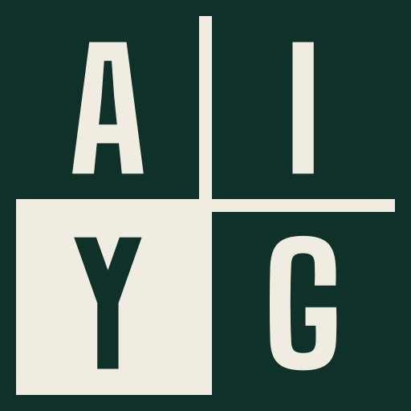
AI Your Gym
Clubsoftware voor sportscholen. Het merk is rustig, precies en eerlijk: premium zonder opschepperij. Racegroen met creme, zoals een clubhuis met een lange traditie. Geen goud, geen brons, geen felle accenten. Alle bestanden staan in deze map.
Het embleem
Een vierkante plaat in vier vakken: A en I boven, Y en G onder, zoals een stempel of een lesrooster. Het vak van de Y (Your, de sportschool zelf) is gevuld in de tweede kleur. Het embleem is altijd tweekleurig: racegroen met creme op een lichte ondergrond, creme met racegroen op een donkere. Een rand in de kleur van de plaat houdt het vierkant heel, ook waar het gevulde vak dezelfde kleur heeft als de ondergrond.
Opbouw in een raster van 100: rand 4, kruis 3, letters 32 hoog (Big Shoulders Bold, met onze eigen Y), elke letter in het midden van zijn vak. Voor 16 tot 32 pixels is er een kleine versie zonder kruis, met een rand van 6 en zwaardere letters van 35.
ayg-embleem-licht.svg: racegroen plaat, creme vak Y.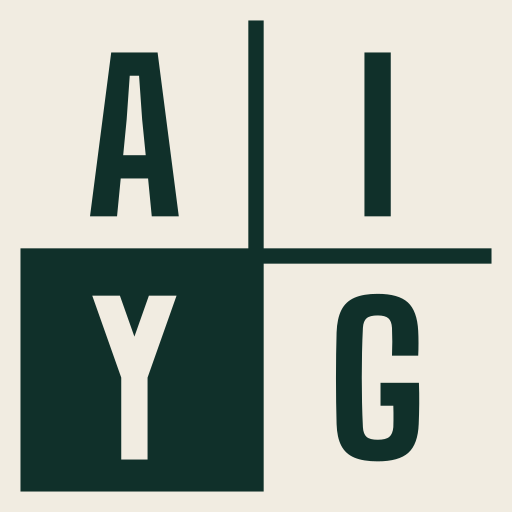
ayg-embleem-donker.svg: creme plaat, racegroen vak Y.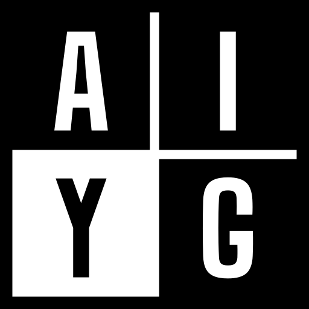
ayg-embleem-zwart.svg: eenkleurig, de rest uitgespaard (stempel, gravure).
ayg-embleem-wit.svg: eenkleurig wit op een donkere of drukke ondergrond.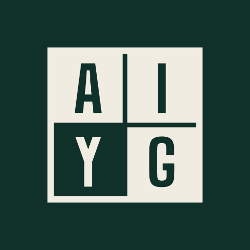
ayg-app-icoon.svg: creme embleem op racegroen, voor app en beginscherm.Het logo
Het liggende logo (embleem plus woordmerk) is de standaard. Het woordmerk is AI YOUR GYM in Big Shoulders Bold, in kapitalen, iets ruimer gespatieerd (0,05 em) en omgezet naar paden. Typ het logo nooit na in een lettertype: gebruik de bestanden of het component AygLogo.
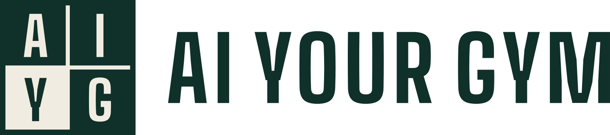
ayg-logo-licht.svg: standaard op creme of wit.
ayg-logo-donker.svg: op racegroen, inkt en donkere foto's.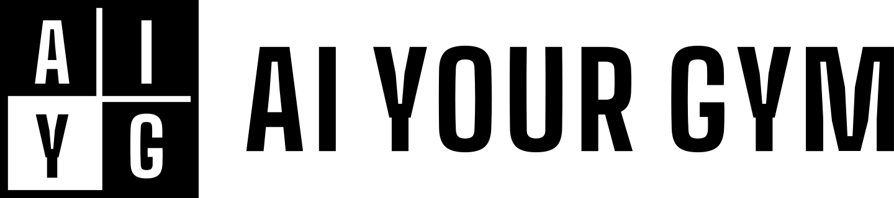
ayg-logo-zwart.svg: eenkleurig zwart.
ayg-logo-wit.svg: eenkleurig wit.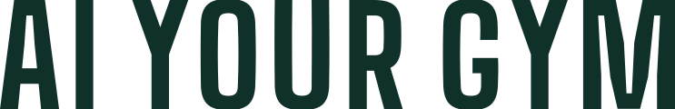
ayg-woordmerk-licht.svg (ook -donker, -zwart, -wit): alleen als het embleem al vlakbij staat, of als groot sierwoord.Opbouw
Het embleem is 1,9 keer zo hoog als de kapitalen van het woordmerk; de kapitalen staan precies in het midden van het embleem. De afstand tussen embleem en woord is 0,24 keer de hoogte van het embleem.
Vrije ruimte
Houd rondom het logo minstens een kwart van de hoogte van het embleem vrij (de breedte van een letter in het embleem). Er komt in die ruimte geen tekst, rand of ander beeld.
Minimummaat
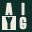
Kleine versie: 16 tot 31 px (favicon)Wel
- De bestanden of
AygLogogebruiken. - Op een rustige ondergrond: creme, wit, racegroen of inkt.
- Op donker de donkere versie (creme plaat).
- Onder 32 px de kleine versie van het embleem.
- Vrije ruimte en minimummaat aanhouden.
Niet
- Uitrekken, kantelen, omlijnen of een schaduw of gloed geven.
- Andere kleuren dan racegroen, creme, zwart of wit in het logo. Geen goud, brons of smaragd.
- De vakken anders ordenen of een ander vak vullen dan dat van de Y.
- Het woord in een ander lettertype of in kleine letters zetten.
- Op een drukke foto zonder rustig vlak eronder.
Kleuren: Racegroen
Racegroen is de hoofdkleur, creme het papier. Flessengroen en salie zijn de bijkleuren, inkt is de kleur van de tekst. Het logo gebruikt alleen racegroen en creme. De waarden in de app staan als tokens in src/app/(aiyourgym)/(website)/aiyourgym/aiyourgym.css; de test src/components/aiyourgym/contrast.test.ts bewaakt het contrast.
| Kleur | Waarde | Gebruik | Contrast (WCAG 2.2) |
|---|---|---|---|
| Racegroen | #10302A | Hoofdkleur: embleem, knoppen, donkere secties | Creme erop 12,06:1 (AAA). Op creme 12,06:1 (AAA). |
| Creme | #F1ECE1 | Papier en achtergrond, tekst en embleem op groen | Inkt erop 15,52:1 (AAA) |
| Flessengroen | #1E4A40 | Tweede groen: vlakken en lijnen op racegroen, tekst op creme | Op creme 8,45:1 (AAA). Creme erop 8,45:1 (AAA). Op racegroen 1,43:1: alleen sier, toon op toon. |
| Salie | #A7B5A8 | Zacht accent: bijschriften en lijnen op groen | Op racegroen 6,64:1 (AA). Op flessengroen 4,66:1 (AA). Inkt erop 8,55:1. Op creme 1,82:1: nooit voor tekst. |
| Inkt | #111614 | Lopende tekst | Op creme 15,52:1 (AAA) |
Letters
- Big Shoulders Bold: alleen het logo (embleem en woordmerk), omgezet naar paden. Smal en stevig, zoals de letters op een clubgebouw. De Y is een eigen tekening (variant "Strak", besluit Kane 23-10-2026): symmetrisch, rechte armen die op halve hoogte in de stam overgaan, een scherpe V zonder inkeping, platte kopjes. Stam en halen zijn even zwaar als de A, I en G; kapitaalhoogte, basislijn en spatiering zijn die van de letter. Deze Y staat in het embleem en in beide Y's van het woordmerk.
- Bricolage Grotesque: koppen op de website en in de deelafbeelding.
- Geist: lopende tekst, cijfers en de interface.
Alle drie staan onder de SIL Open Font License 1.1: vrij te gebruiken, ook in een logo en in software die we verkopen. Big Shoulders zit als paden in het logo en hoeft nergens geladen te worden. De website laadt Bricolage Grotesque en Geist via next/font (zelf gehost, geen verbinding met Google).
Toon van schrijven
We schrijven zoals een goede trainer praat: kort, concreet en eerlijk. Nederlands, met je en jij.
Wel
- Zeggen wat het product nu echt doet.
- "Scherp geprijsd", "elke maand nieuwe functies", "gebouwd met AI".
- Concrete voorbeelden uit de sportschool: de balie, de vloer, de les van half zeven.
- De naam altijd als AI Your Gym (in het logo in kapitalen).
Niet
- "De goedkoopste", "geavanceerde AI", "revolutionair" of andere claims die we niet kunnen onderbouwen.
- Nep-schaarste, aftelklokken, verzonnen reviews, klantlogo's of aantallen.
- Prijzen op de website (die staan alleen in Stripe).
- Varianten als AIYourGym, AiYourGym of AYG in teksten voor klanten.
Iconen en deelafbeelding
- Favicon:
src/app/(aiyourgym)/(website)/aiyourgym/icon.svgen(club)/club/icon.svg, de kleine versie van het embleem. In een donkere browser wordt de plaat creme. - Apple-icoon (180 px, vol vlak; iOS rondt zelf af):
apple-icon.pngnaast elkicon.svg, gelijk aan het app-icoon. - Deelafbeelding (1200 x 630):
opengraph-image.tsxentwitter-image.tsxinsrc/app/(aiyourgym)/(website)/aiyourgym/(site)/, alleen als de website openbaar is. - De ledenapp toont de sportschool, niet ons merk: de reserve-iconen in
public/club-app/blijven neutraal.
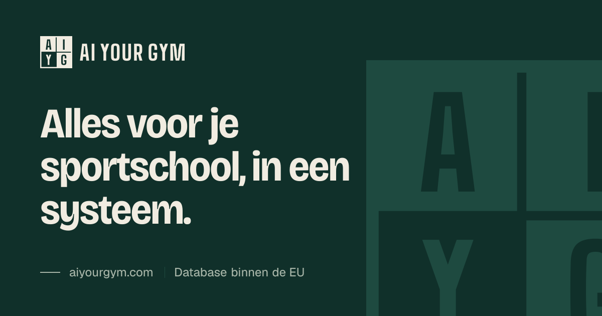
Aanpassen
Alles komt uit een script: node docs/aiyourgym/brand/bron/genereer.mjs (vanuit de hoofdmap). Het schrijft de paden voor de app (src/components/aiyourgym/merk/merk-paden.ts), de bestanden in deze map en de iconen, en drukt de contrastwaarden af. Pas maten alleen daar aan, nooit in de gegenereerde bestanden.